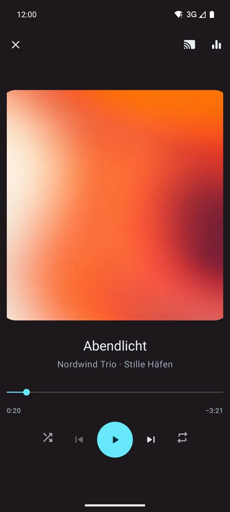
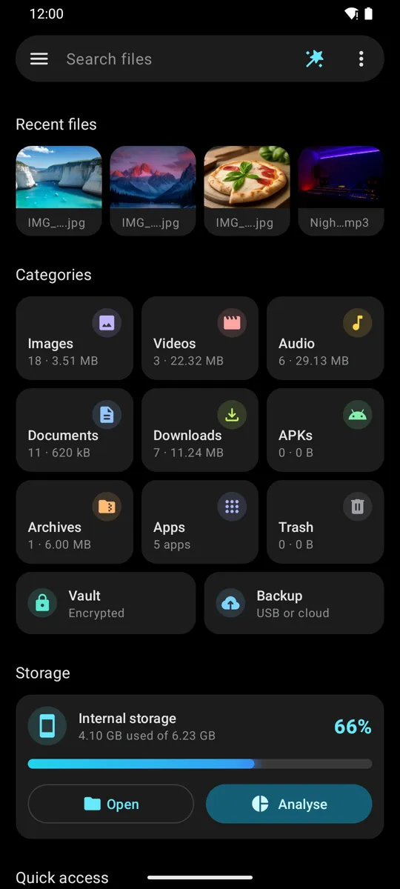
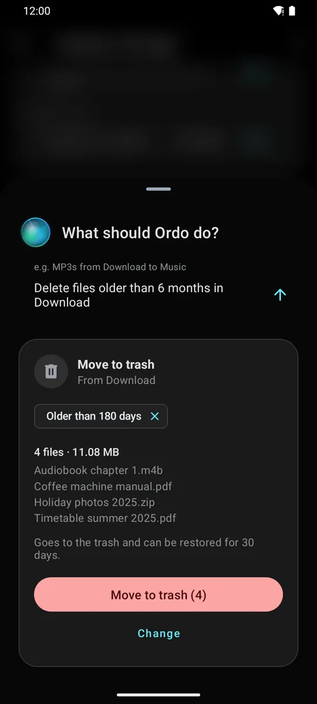
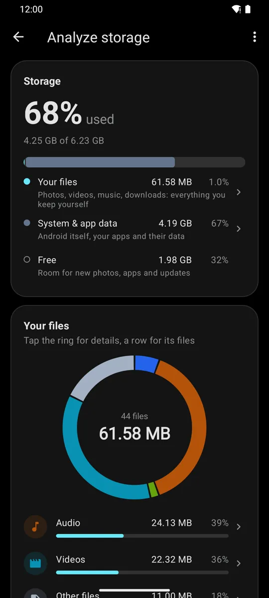
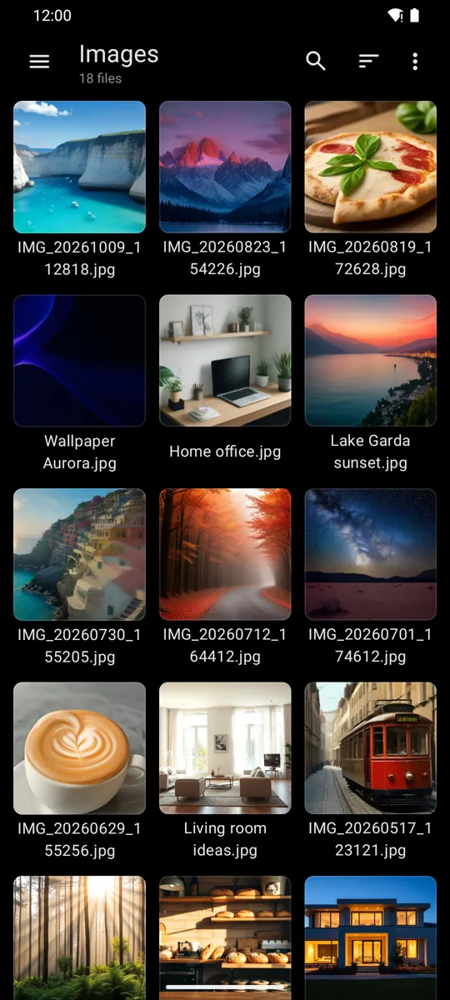
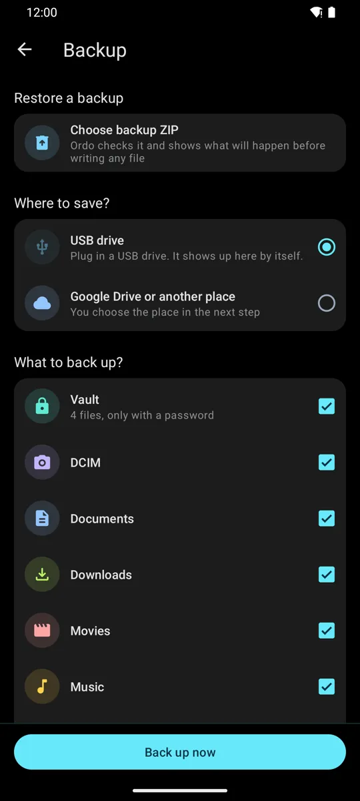
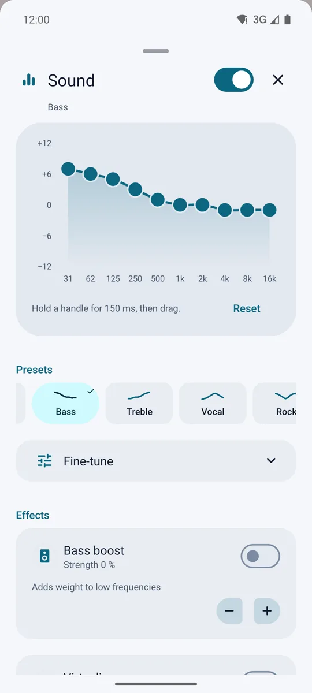
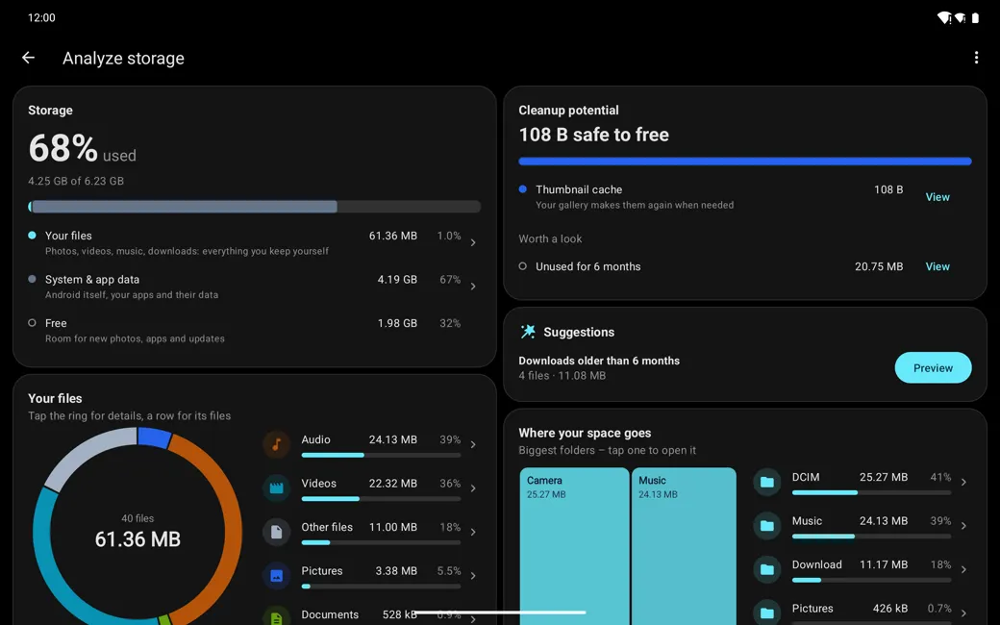

Everything in order.
Ordo is a file manager for Android with an AI that runs entirely on your phone. Free, open source, no ads and no tracking.
- No ads
- No tracking
- Open source, GPL-3.0
- Android 6.0 and up
See what fills your storage.
While the analysis runs, a ring fills up with the file types it finds. When it is done, the ring becomes the overview: your files, system and free space, the folders that take the most room and what you can safely free up.
- Large files, duplicates, old APKs. Plus files you have not opened in a long time, empty folders and the thumbnail cache, every list with previews.
- Internal storage, SD card, USB stick. Every type and every folder opens as its own page, largest first.
- Nothing is deleted until you tap. And then it goes to the trash, where you can restore it for 30 days.
Redrawn from a capture on the test device.
Just say what you want.
Type or dictate a sentence. Ordo turns it into a plan, shows it to you and only acts once you confirm. One tap undoes it. The language model runs on your phone, so your commands and file names never leave it.
Real commands and Ordo’s answers, measured on 14 Nov 2026, in English and German. In the app a command takes about 14 seconds; the wait is shortened here.
- Delete always means trash. And only when the sentence clearly asks for it. “Don’t delete” is never read as delete.
- System folders are off limits. So are hidden folders and Android/data. Ordo only touches the camera folder when you name it.
- Ordo doesn’t guess. If a folder is unclear, it asks. Existing files are never overwritten.
- Model
- Qwen3.5-4B, on the phone with llama.cpp
- Setup
- Off until you turn it on. One-time download of about 2.6 GB, Wi-Fi only by default. Offline after that.
- Requirements
- 64-bit phone with a recent Arm chip (Armv8.2, dot product), at least 10 GB RAM (phones sold with 12 GB), about 3.1 GB free
- Speed
- About 14 seconds per command on a Galaxy Tab S9 Ultra
Redrawn. The real recording is further down.
Lock away what’s private. Back up what matters.
The vault encrypts files with AES-256-GCM and opens with your screen lock. The key stays in your phone’s keystore and never leaves it.
- Backups as ZIP. Folders and the vault to a USB stick or any place your phone offers, such as Google Drive. With a password if you like.
- Restore without overwriting. Regular files come back without replacing the ones you have.
- Stop rather than half a backup. If a file becomes unreadable midway, the backup stops instead of storing it cut short.
Redrawn, with sample files.
Your music, sounding the way you like.
Tap a song and Ordo plays it, with cover art, a queue and controls in the notification, on the lock screen and on your headphone buttons.
- Tune it by ear. A 10-band equalizer with a curve and presets from Bass to Classical. Precise −/+ buttons handle the final touch.
- Every song equally loud. ReplayGain and R128 even out the volume. Balance, mono and a speed control that keeps the pitch come with it.
- Fall asleep to it. The timer stops after 15 to 60 minutes or at the end of the song, fading out gently.
- Play it where you like. One tap on “Play on…” sends the music to Bluetooth headphones, a speaker or a cast device.
- Its own icon. If you want, “Ordo Music” sits on your home screen as an app of its own.

Captured in the app, with sample songs.
Nothing leaves your phone.
Ordo collects no data. Your files, your AI commands and your settings stay on your device.
- No ads, no trackers, no analytics.No in-app purchases either. Ordo is completely free, AI commands included.
- Online only when you want it.For servers you set up yourself, and once to download the AI model. Ordo never connects to the internet on its own.
- The AI runs on your phone.The language model runs on the device. Commands and file names go to no server.
- Nothing in cloud backups.App data is excluded from cloud backup and device transfer. Server passwords stay on your phone.
What Ordo really looks like.
Captures from the app on a test device, with sample files.







And everything a file manager has to do.
Network
Connect FTP, SFTP, SMB and WebDAV directly. The built-in FTP server shares files over Wi-Fi.
Archives
Create and extract ZIP, TAR and 7z. Nothing lands outside the folder you picked.
Search
By name or by text inside files, with regular expressions if you want.
Work with files
Copy, move and share with speed and time remaining. Rename many files at once with a pattern.
For power users
Root and Shizuku access, Linux permissions, symbolic links and SELinux context.
Your way
Five accent colours or the ones from your wallpaper. Light, dark or true black, animations full, subtle or off.
Free software, open to everyone.
Ordo is licensed under the GNU GPL 3.0. Anyone can read the source, check it and build Ordo themselves.
Ordo is a fork of Material Files by Hai Zhang. Its file system, archive and server support are the foundation of this app. Thank you!
For the AI, Ordo uses llama.cpp and the Qwen3.5 model (Apache-2.0); for encryption, Tink.
Get Ordo.
Ordo is still in development. On Google Play it will appear as “Ordo – File Manager with AI”. Until then, test builds are on GitHub.
Android 6.0 and up, in English and German. AI commands need a phone with at least 10 GB RAM.